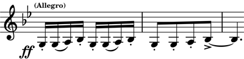

プロコフィエフ: 二つのヴァイオリンのためのソナタ
そういえばプロコフィエフの室内楽をヴァイオリンソナタくらいしか聴いてこなかったなと思い、チェコのパヴェル・ハース四重奏団のアルバムで3曲を聴いてみた。『弦楽四重奏曲』第1、第2と『二つのヴァイオリンのためのソナタ』が入っている。いずれも自伝において作曲動機についてさらっと言及されている曲。『ソナタ』が気に入ったので調べてみたら2楽章だけだがオイストラフ親子の演奏が映像付きでYouTubeにあった。貴重である。パヴェル・ハースの二人（Veronika JarůškováとEva Karová）も見事に息の合った快い掛け合いを繰り広げる。結構エグい音色も使って曲の性格を際立たせているようだ。
Prokofiev: Sonata for 2 Violins, Op. 64
Pavel Haas Quartet
(2009)
『ソナタ』の2楽章にはプロコフィエフらしい、耳について離れない、子供が口ずさんだような、冗談めいたフレーズ（下）が出てくるが、『弦楽四重奏曲第2番』にもそれに輪をかけて耳につく生な感じの主題があちこちにある。こういう旋律の扱いはプロコフィエフ以外誰もできなかったのではないだろうか。天才としか言いようがない。

『ソナタ』がパリのモダニズムの影響下にあるのに対して、後者は疎開先であったコーカサス方面の民謡を元にしているということで全体的なカラーには違いがある。パヴェル・ハース四重奏団はこの『弦楽四重奏曲第2番』終楽章にあるスル・ポンティチェロ奏法指定箇所において、奏法からの予想を超えて、金属的で歪んだ、民族楽器を思わせる音を思い切り良く出していて驚かされる。
(Feb. 4, 2023)